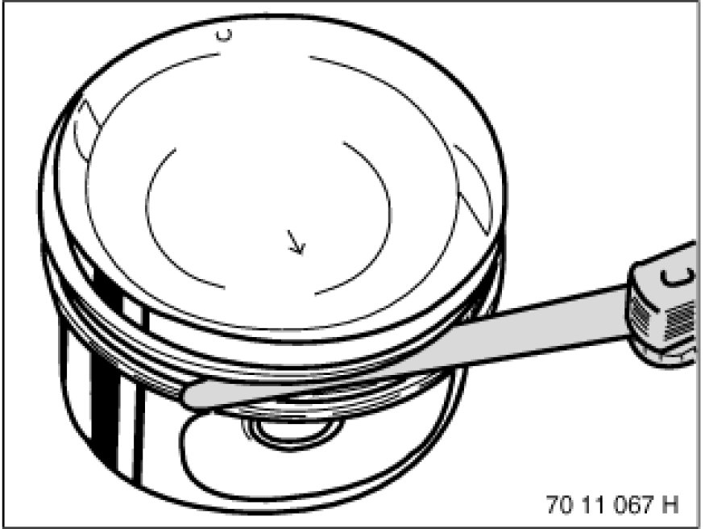
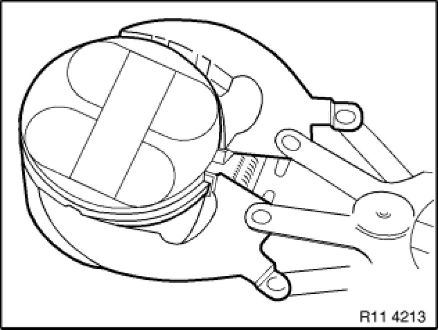
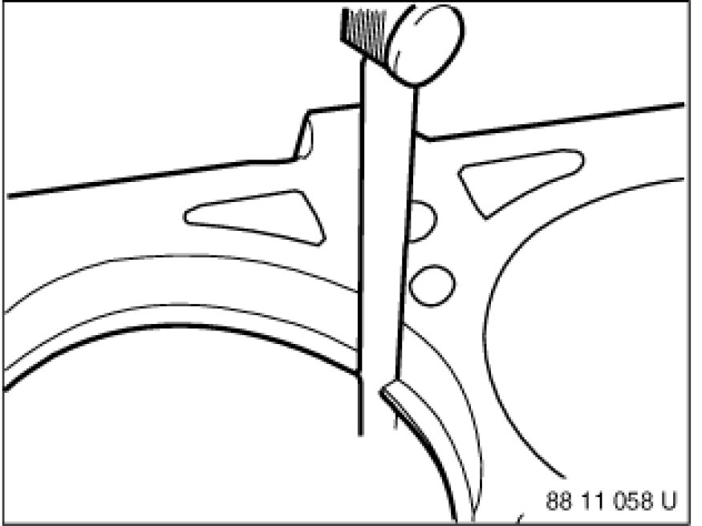
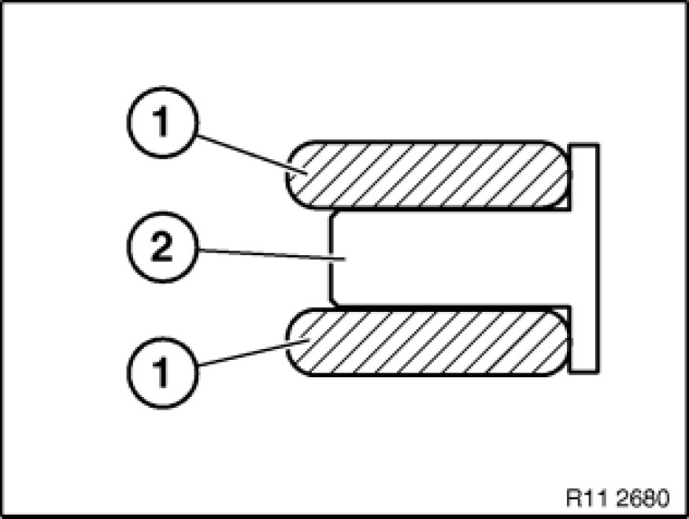
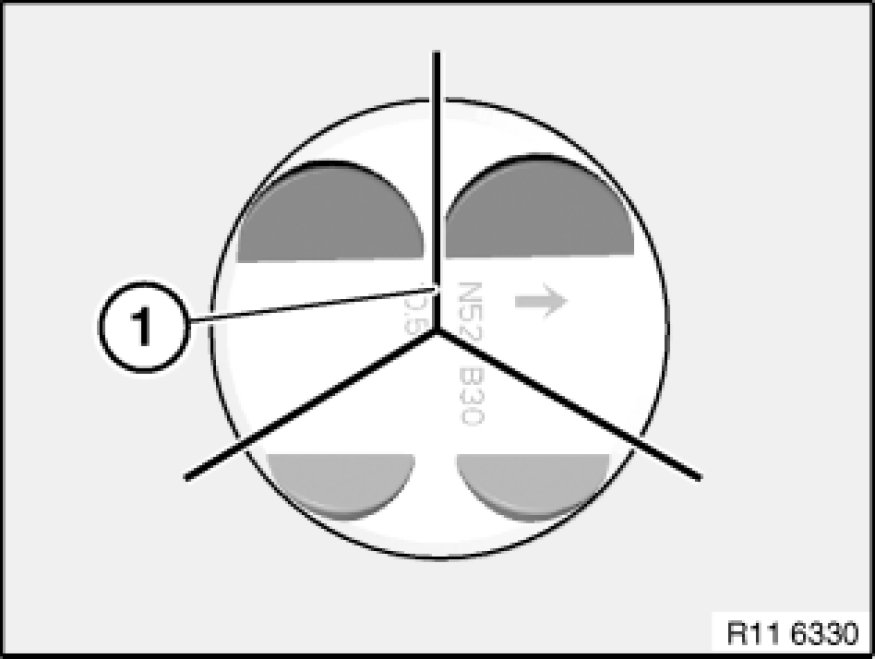

Piston Ring: Service and Repair
11 25 671 - Replacing piston rings on all pistons (N52K)

Necessary preliminary tasks:
- Removing all pistons Service and Repair

Measuring axial clearance of piston rings in piston ring groove.
Technical Data.
Note:
It is not possible to measure the axial clearance of the U-flex rings.

Remove plain compression ring and stepped ring upwards with piston ring pliers.
The U-flex ring comprises two steel band rings and a support spring.
Note:
The U-flex ring cannot be removed with piston ring pliers.
Put aside all piston rings in correct sequence and installation position.
It might not be possible to find the identification on used piston rings.
Installation:
New pistons may only be installed together with new piston rings.

Determine end clearance with a feeler gauge.

Note:
Schematic diagram of piston rings.
Installation:
Piston rings with "TOP" identification must point to piston crown.
1. - Plain compression ring
2. - Stepped ring "TOP"
3. - U-flex ring

Note:
The U-flex ring comprises two steel band rings (1) and a support spring (2).
Installation:
Insert support spring (2) into piston ring groove and then fit steel band rings (1) so that contact points are offset by approx. 120°.

The contact points (1) of the piston rings must be arranged offset by approx. 120°. However, the contact points (1) must not be arranged over the piston pin boss.
Note:
Picture shows N52.

Assemble engine.